Maruti Suzuki India Limited ('Maruti Suzuki', 'MSIL' or the 'Company') is India's largest passenger vehicle manufacturer and the single largest subsidiary of Suzuki Motor Corporation ('SMC'), Japan, by both production and sales volume. The Company was incorporated in 1981 as Maruti Udyog Limited, a Government of India undertaking, and entered into a joint venture with SMC in 1982. The Government progressively divested its holding, and the Company became a subsidiary of SMC in 2002. It was renamed Maruti Suzuki India Limited in 2007 and is headquartered in New Delhi.
The Company designs, manufactures and sells passenger cars, utility vehicles and vans, together with components and spare parts. It also operates a set of adjacent service businesses — pre-owned car retail under True Value, fleet management, driving schools, accessories, insurance distribution and vehicle financing facilitation — which deepen the customer relationship without materially consuming balance sheet capital.
In FY26 Maruti Suzuki sold a record 24,22,713 vehicles, comprising 19,74,939 units domestically and 4,47,774 units in exports. It operated at effectively full utilisation across its manufacturing base, producing over 23.4 lakh units, and closed the year with a pending order book of roughly 1,90,000 units and dealer inventory of only about twelve days. It has remained India's largest passenger vehicle exporter for five consecutive years, accounting for 49% of the country's total passenger vehicle exports.
The Company's distribution reach is its most durable competitive asset. Its three-format retail network — Arena for mass-market models, NEXA for premium models and True Value for pre-owned vehicles — is supported by a service footprint that extends deep into semi-urban and rural India, where no rival has matched its density.
| Market capitalisation (Rs Cr) | 4,34,945 |
| 52-week high / low (Rs) | 17,372 / 12,201 |
| Shares outstanding (Cr) | 31.44 |
| Face value (Rs) | 5.00 |
| Book value per share (Rs) | 3,408 |
| Price / book (x) | 4.06 |
| Trailing P/E (x) | 30.3 |
| Dividend yield (%) | 1.01 |
| FY26 dividend per share (Rs) | 140.00 |
| Credit rating | CRISIL AAA / A1+ |
| 1 year | 7% |
| 3 years | 14% |
| 5 years | 15% |
| 10 years | 11% |
| Promoter (Suzuki Motor Corp.) | 58.65% |
| Domestic institutions | 25.09% |
| Foreign institutions | 12.82% |
| Public | 3.35% |
| Government | 0.08% |
| Promoter shares pledged | Nil |
| Rs Crore (consolidated) | FY24 | FY25 | FY26 | FY27E | FY28E |
|---|---|---|---|---|---|
| Net revenue | 1,41,858 | 1,52,913 | 1,83,316 | 2,08,980 | 2,34,058 |
| Revenue growth (%) | 20.7% | 7.8% | 19.9% | 14.0% | 12.0% |
| EBITDA | 18,626 | 20,224 | 21,530 | 25,077 | 29,725 |
| EBITDA margin (%) | 13.13% | 13.23% | 11.75% | 12.00% | 12.70% |
| EBIT | 13,370 | 14,616 | 14,788 | 17,345 | 21,065 |
| EBIT margin (%) | 9.42% | 9.56% | 8.07% | 8.30% | 9.00% |
| Profit after tax | 13,488 | 14,500 | 14,680 | 16,684 | 19,318 |
| PAT growth (%) | 64.3% | 7.5% | 1.2% | 13.7% | 15.8% |
| PAT margin (%) | 9.51% | 9.48% | 8.01% | 7.98% | 8.25% |
| Earnings per share (Rs) | 429.0 | 461.2 | 466.9 | 530.7 | 614.4 |
| Return on equity (%) | 18.3% | 15.9% | 14.4% | 14.8% | 15.4% |
| Price / earnings (x) | 32.2 | 30.0 | 29.6 | 26.1 | 22.5 |
| EV / EBITDA (x) | 19.2 | 17.7 | 16.6 | 14.3 | 12.0 |
Source: Company filings and Screener.in for FY24–FY26; FY27E and FY28E are the author's estimates. EV computed on market capitalisation less net cash and investments of Rs 76,803 crore, held constant across forecast years.
Three forces opened it. Cost of materials consumed rose 27.9% against revenue growth of 19.9%. Employee costs rose 28.8% as the Company staffed ahead of its Kharkhoda capacity ramp. Depreciation rose 20.2% as an aggressive capital expenditure cycle began to hit the profit and loss account. Meanwhile other income — the return on a Rs 76,838 crore treasury book that has quietly become a material part of reported profit — fell 13.2%, removing the cushion that had flattered FY25.
The Q1 FY27 print sharpened the concern rather than resolving it. Revenue of Rs 52,470 crore was almost identical to the record Q4, but the EBITDA margin fell to 8.2% from 11.7%, and profit after tax declined 10.8% year on year. One quarter is not a trend. But it is the fourth consecutive quarter in which volume strength has failed to convert into profit, and the burden of proof now sits with management.
The global economy entered calendar 2026 growing, but slowly and unevenly. Advanced economies continued to expand at rates around 1.5%, while emerging and developing economies — India foremost among them — remained the principal engine of world activity. Headline inflation across most major economies has retreated from its post-pandemic peaks, allowing central banks to begin unwinding restrictive policy, though the pace has been cautious and policy rates in several jurisdictions remain above neutral.
For an automobile manufacturer the transmission channels from this backdrop are specific rather than general. Three matter most. First, the policy rate cycle: passenger vehicles in India are overwhelmingly financed, so the cost and availability of retail credit is a direct determinant of affordability. A gradual easing bias is supportive at the margin. Second, commodity prices: steel, aluminium, copper and precious metals for catalytic converters together account for the bulk of a vehicle's bill of materials, and these have been firm rather than falling. Third, currency: Maruti Suzuki carries residual yen-denominated exposure through royalty payments and imported components, so rupee-yen movement feeds directly into gross margin.
Global vehicle demand itself has bifurcated. Mature markets are contending with electric vehicle transition costs, tariff frictions and softening replacement demand. Emerging markets — Africa, Latin America, the Middle East and South-East Asia — are still adding first-time car buyers. This divergence is unambiguously favourable to Maruti Suzuki, whose export book is weighted precisely towards those growth markets rather than towards Europe or North America.
India remains the fastest-growing major economy, supported by resilient domestic consumption, sustained public capital expenditure, rapid digitalisation and a manufacturing push under production-linked incentive schemes. The structural drivers that matter for passenger vehicle demand are all intact: rising per-capita income, a young median age, accelerating urbanisation, improving road infrastructure and — critically — car penetration that remains among the lowest in any large economy at roughly 35 vehicles per thousand people, against several hundred in developed markets. The runway is long; the question is always the pace, not the direction.
The single most consequential policy event of FY26 for this sector was the GST reform effective 22 September 2025, which is examined in detail later in this report. Its effect was immediate and visible: management attributed the record year explicitly to it, and the improvement in domestic demand from the second half of the fiscal year is traceable directly to the reduction in the tax burden on small cars.
Two risks deserve to be held in view. Household leverage has risen alongside consumption, and a sustained increase in unsecured retail credit stress would flow through to vehicle financing approval rates. And rural demand, though currently supportive, remains monsoon-dependent. Management noted on the Q4 FY26 call that the boundary between urban and rural demand is increasingly blurred, with rural India integrating into urban consumption patterns — a genuinely positive structural observation, but one that also means rural weakness would no longer be a contained problem.
India's passenger vehicle industry closed FY26 with 46.83 lakh units, growing 13% over FY25 and setting what industry observers now treat as the new baseline. Retail registrations, tracked separately by the Federation of Automobile Dealers Associations, reached 47,05,056 units against 41,63,927 in FY25. The market has roughly doubled in six years from the pandemic-affected trough, and 50 lakh units is no longer a distant ambition but a near-term expectation.
Beneath that headline the composition of the market has changed more than its size. Three shifts define the industry Maruti Suzuki now competes in, and each cuts differently for the Company.
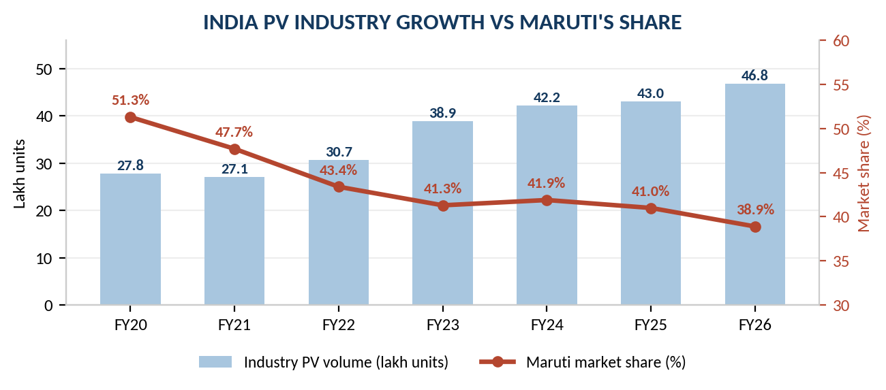
Utility vehicles have moved from a niche to the centre of the market. Buyers have traded hatchbacks for compact SUVs at every price point, drawn by ride height, perceived safety and status. This is the shift that cost Maruti Suzuki most dearly. Mahindra, a pure-play SUV manufacturer, grew volumes 19.73% in FY26 to 6,60,276 units and lifted its share to 14.10% — from just 6.54% in FY20. Tata Motors grew 14.05% to 6,31,387 units and 13.48% share, from 4.76% in FY20. Both took share directly from the incumbent.
Maruti Suzuki's response has been to build an SUV portfolio quickly — Brezza, Fronx, Grand Vitara, Jimny, Invicto and now Victoris — and it is working. Utility vehicles rose to 37.7% of domestic volumes in 9M FY26, nearly level with the compact segment. Victoris in particular has been a genuine success, becoming the fastest mid-SUV in India to reach 50,000 cumulative sales and winning the Indian Car of the Year award from a jury of nineteen publications. But the Company is competing in this segment rather than owning it, which is a materially different economic position from the one it holds in small cars.
For four years the entry-level segment shrank, as rising regulatory content — safety norms, emission standards — pushed the price of the cheapest cars beyond the reach of first-time buyers, and as the two-wheeler-to-car upgrade path stalled. GST 2.0 reversed this. By cutting the effective tax on small cars from 28% plus cess to a flat 18%, the reform delivered an on-road price reduction of roughly 8% overnight. Demand responded, and a large portion of Maruti Suzuki's 1,90,000-unit closing order book consists of small cars.
This is the segment where the Company's position is genuinely defensible. No competitor has the manufacturing scale, the supplier base, the service density or the residual-value reputation to profitably contest a Rs 5–8 lakh hatchback at volume. Where the industry narrative has been that small cars are a structurally declining business, FY26 offers a counter-argument: they were a structurally over-taxed business.
India has not followed the binary petrol-to-electric transition seen in China or Europe. Instead the market has fragmented across five powertrains, and in FY26 no single alternative fuel dominated. Petrol and ethanol accounted for 47.48% of retail volumes, CNG and LPG 21.98%, diesel 18.08%, hybrids 8.22% and battery electric vehicles 4.25%.
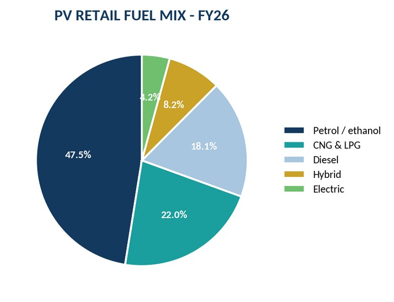
This fragmentation is, on balance, favourable to Maruti Suzuki. The Company is the clear leader in factory-fitted CNG, the second-largest category, where its scale advantage in a low-margin, high-volume fitment is difficult to replicate. It has almost no diesel exposure, which is a declining category. It participates in hybrids through its Toyota partnership. And its EV entry, the e VITARA, arrives into a category that is still only 4.25% of the market — late by global standards, but not late by Indian ones.
The strategic risk is not that Maruti Suzuki has missed electrification. It is that hedging across five powertrains carries real cost: multiple platforms, multiple supplier bases, multiple certification programmes, and capital spread thinner than a focused competitor would spread it.
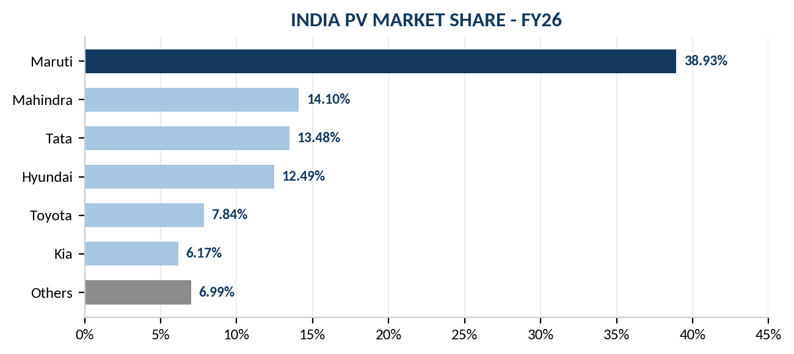
The structure of this table is the central strategic fact about Maruti Suzuki. It remains larger than its two nearest competitors combined, and that scale confers real advantages in procurement, distribution and service. But it has lost 12.4 percentage points of share in six years, and the loss has been continuous rather than episodic. An incumbent losing roughly two points of share a year in a market growing 13% is still growing volumes — Maruti Suzuki grew 3.54% in FY26 — but it is being out-grown, and the market is pricing an eventual stabilisation that has not yet appeared in the data.
Effective 22 September 2025, the 56th GST Council meeting collapsed India's four-slab indirect tax structure and, in doing so, rewrote the economics of the passenger vehicle market. For Maruti Suzuki the change was not incremental. The Chairman stated plainly on the Q4 FY26 earnings call that FY26 became a record year largely because of the GST reforms and the reduction in the GST rate.
| Vehicle category | Pre-reform effective tax | Post-reform rate | Indicative on-road price change | Relevance to MSIL |
|---|---|---|---|---|
| Small petrol cars (<=1200cc, <4m) | 28% + cess | 18% | Approx. -8% | Very high |
| Small diesel cars (<=1500cc, <4m) | 28% + cess | 18% | Approx. -8% | Low |
| Larger cars and SUVs | 28% + cess up to 22% | 40% | -3.5% to -6.5% | High |
| Strong hybrids above 4m | 28% + cess | 40% (cess removed) | Approx. -3% | Moderate |
| Battery electric vehicles | 5% | 5% (unchanged) | Unchanged | Growing |
Source: 56th GST Council recommendations effective 22 September 2025; price-impact estimates per sell-side commentary (HSBC, Nomura, YES Securities).
Two features of this reform deserve emphasis because they are frequently conflated. The first is that it was not a uniform giveaway. Small cars moved down a full ten percentage points; larger cars and SUVs moved from a headline 28% to 40%, but because the compensation cess of up to 22% was abolished simultaneously, their all-in burden also fell, by a smaller 3.5% to 6.5%. The reform therefore compressed the tax gap between a hatchback and an SUV — which helps Maruti Suzuki's core segment disproportionately.
The second is that manufacturers passed the benefit through in full rather than retaining it as margin. This was the right commercial decision and the right regulatory one, but it means the reform shows up in Maruti Suzuki's volumes and revenue, not in its margins. Anyone looking for GST 2.0 to explain a margin expansion will not find it; the reform explains the 19.9% revenue growth, and the absence of margin expansion alongside it is precisely what makes FY26 an awkward year to interpret.
Exports have become the most consistently improving part of Maruti Suzuki's operations and, in this analyst's view, the least reflected in market commentary. Volumes grew 34.6% in FY26 to a record 4,47,774 units, following 28.2% growth in FY25. The Company has been India's largest passenger vehicle exporter for five consecutive years and accounted for 49% of the country's total PV exports in FY26 — effectively half of everything India ships.
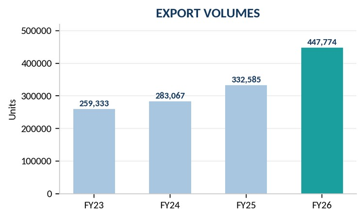
The strategic logic is precise. Suzuki Motor Corporation has consolidated small-car engineering and manufacturing for global markets in India, because India is where the volume, the supplier ecosystem and the cost base exist. Maruti Suzuki is therefore not merely selling surplus domestic production abroad; it is the group's designated global small-car plant.
The e VITARA gives this argument its clearest expression. Developed on a dedicated electric platform and engineered for around 100 global markets, it was exported to 44 countries within its first year. For a company frequently criticised as late to electrification, being the export source of a group EV programme is a materially stronger position than domestic EV share alone would suggest.
Export economics also differ favourably from domestic economics in one important respect: export volumes carry no GST, are less exposed to Indian retail credit conditions, and are dollar-denominated. In Q4 FY26 export revenue was USD 1.24 billion. As exports rise towards a fifth of total volume, they provide a genuine diversification of the Company's demand risk — though they simultaneously add currency risk to a business that already carries yen exposure on the cost side.
Maruti Suzuki produced over 23.4 lakh units in FY26 at approximately 100% capacity utilisation. Full utilisation is customarily read as a mark of operating strength, and in one sense it is. But for an equity investor it is more usefully read as a constraint: the Company physically could not have sold more, closed the year with 1,90,000 units of unfilled orders, and had dealer inventory down to twelve days. Demand it could not serve is revenue it did not book.
The response is the largest capital expenditure programme in the Company's history. Capital expenditure was Rs 10,398 crore in FY26 and is guided at Rs 14,000 crore for FY27. Phase 2 of the Kharkhoda facility in Haryana is operational, with additional lines expected through FY27; each line adds roughly 250,000 units of annual capacity. Approximately 500,000 units of incremental capacity is planned by the end of FY27, against a longer-term ambition of 4 million units of annual capacity by 2031. Suzuki Motor Corporation has separately committed to a second manufacturing facility in Gujarat.
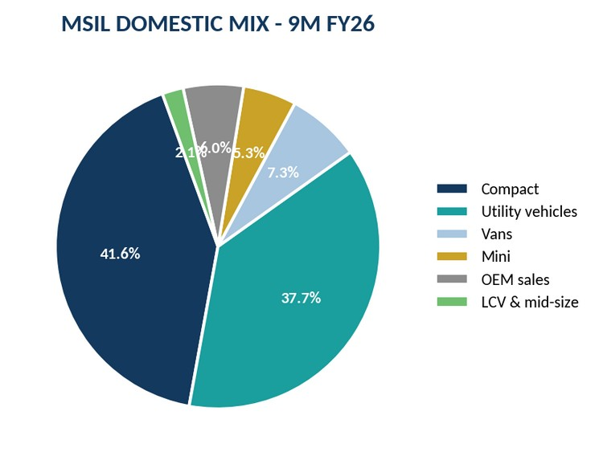
Compact vehicles at 41.6% and utility vehicles at 37.7% now sit almost level — a portfolio balance the Company did not have three years ago, and evidence that the SUV catch-up is genuine rather than cosmetic.
Vans at 7.3% and mini at 5.3% represent the legacy franchise: low average selling price, high volume, and difficult for any competitor to attack profitably.
Sales to other original equipment manufacturers at 6.0% is the Toyota badge-engineering arrangement — capacity-filling volume at thinner margin, useful for absorbing fixed cost but dilutive to reported profitability.
Chairman since 2007 and associated with the Company since 1981, having joined after twenty-five years in the Indian Administrative Service. Educated at The Doon School, Allahabad University and Williams College. A former Chief Executive of the Company and recipient of the Padma Bhushan in 2016. His continuity through four decades of the Company's history is close to unique in Indian industry, and his public advocacy for small-car affordability materially shaped the policy debate that produced GST 2.0.
Joined Suzuki Motor Corporation in 1986 and has served on the Maruti Suzuki board since July 2019, becoming Joint Managing Director (Commercial) in 2021 and MD & CEO on 1 April 2022. Re-appointed by the Board in January 2025 for a further three-year term to 31 March 2028. Previously Managing Director of Magyar Suzuki Corporation and Division General Manager of SMC's Global Business Administration and Planning Division. His tenure has been defined by the SUV portfolio build-out and the export expansion.
Managing Director and CEO of the Company from 2013 to 2022, and previously President of the Society of Indian Automobile Manufacturers. Retention of a former chief executive in an executive vice-chairman capacity provides institutional continuity across the leadership transition and preserves the working relationship with the Japanese parent.
Chief Financial Officer since January 2024, having joined as CFO-designate in October 2023. Previously Zone Chief Financial Officer for the Greater India region at Schneider Electric. Brings a multinational industrial finance background to a treasury function that now manages an investment book larger than the market capitalisation of most listed Indian manufacturers.
Long-tenured executive with responsibility spanning marketing and sales. Among the most publicly visible voices on Indian passenger vehicle demand, and a principal architect of the three-format retail strategy across Arena, NEXA and True Value.
The governance structure here is unusual and worth stating plainly: Maruti Suzuki is a listed Indian company that is also a 58.65%-owned subsidiary of a Japanese parent. Operational leadership is Japanese and rotates from Suzuki Motor Corporation; the chairmanship and much of the commercial leadership is Indian and long-tenured. In practice this has worked — the combination has produced four decades of market leadership — but it carries two structural implications an investor should hold in view.
First, strategic direction on powertrain and platform is set in Hamamatsu, not in New Delhi. Maruti Suzuki's relatively late entry into battery electric vehicles was a Suzuki group decision, and the Company's ability to accelerate independently is limited. Second, related-party arrangements — royalties, component sourcing, the contract manufacturing history with Suzuki Motor Gujarat before its amalgamation into the Company on 1 April 2025 — mean that value can, in principle, be shared between parent and listed entity in ways minority shareholders do not fully control. There is no evidence of value extraction, and the amalgamation of SMG simplified the structure considerably. But the governance discount that some investors apply to this structure is not irrational.
On execution, the record is strong. The SUV portfolio was built quickly from a standing start. Exports were scaled to half of India's total PV exports. The balance sheet has been managed with genuine conservatism. The current challenge — converting record volumes into profit — is a cost and capacity problem, which is the kind of problem this management team has historically solved.
| Particulars | Mar-22 | Mar-23 | Mar-24 | Mar-25 | Mar-26 | Jun-26 |
|---|---|---|---|---|---|---|
| Promoters | 56.37% | 56.48% | 58.19% | 58.28% | 58.53% | 58.65% |
| Foreign institutional investors | 22.57% | 21.11% | 19.64% | 14.96% | 14.12% | 12.82% |
| Domestic institutional investors | 16.25% | 18.57% | 18.86% | 23.56% | 24.09% | 25.09% |
| Government | 0.00% | 0.06% | 0.06% | 0.08% | 0.08% | 0.08% |
| Public | 4.81% | 3.78% | 3.24% | 3.12% | 3.18% | 3.35% |
| Number of shareholders | 4,31,889 | 4,15,127 | 3,64,375 | 3,78,893 | 4,00,860 | 4,11,238 |
Source: Company shareholding disclosures via Screener.in. Classification methodology changed from September 2022 under the revised XBRL format, which affects comparability of the FII/DII split across that boundary.
Three movements in this table carry information. The first is the steady increase in promoter holding, from 56.37% in March 2022 to 58.65% in June 2026. Suzuki Motor Corporation has been adding to its stake, principally through the share issuance associated with the Suzuki Motor Gujarat amalgamation. A parent increasing its holding in a subsidiary is generally a constructive signal about the parent's own view of the asset. No promoter shares are pledged.
The second is the sustained foreign institutional exit: from 22.57% in March 2022 to 12.82% in June 2026, a decline of nearly ten percentage points, and continuing through the most recent quarter. This is the most negative datapoint in the ownership structure. Foreign investors with a choice across global automotive names have been reducing exposure through a period in which the Company was setting volume records, which suggests the concern is valuation and margin structure rather than demand.
The third is the domestic institutional absorption of that selling, from 16.25% to 25.09% over the same period. Domestic mutual funds and insurers have been consistent buyers. The practical consequence is that the shareholder register has been progressively domesticated — which tends to reduce volatility, since domestic institutional flows into Indian equities have been steady, but also reduces the marginal buyer pool if domestic allocations approach their limits.
| Rs Crore | FY19 | FY20 | FY21 | FY22 | FY23 | FY24 | FY25 | FY26 |
|---|---|---|---|---|---|---|---|---|
| Revenue from operations | 86,068 | 75,660 | 70,372 | 88,330 | 1,17,571 | 1,41,858 | 1,52,913 | 1,83,316 |
| Revenue growth (%) | — | (12.1%) | (7.0%) | 25.5% | 33.1% | 20.7% | 7.8% | 19.9% |
| Total expenses | 75,012 | 68,305 | 64,961 | 82,578 | 1,06,542 | 1,23,232 | 1,32,689 | 1,61,786 |
| EBITDA | 11,056 | 7,355 | 5,411 | 5,752 | 11,029 | 18,626 | 20,224 | 21,530 |
| EBITDA margin (%) | 12.85% | 9.72% | 7.69% | 6.51% | 9.38% | 13.13% | 13.23% | 11.75% |
| Depreciation | 3,021 | 3,528 | 3,034 | 2,789 | 2,826 | 5,256 | 5,608 | 6,742 |
| EBIT | 8,035 | 3,827 | 2,377 | 2,963 | 8,203 | 13,370 | 14,616 | 14,788 |
| EBIT margin (%) | 9.33% | 5.06% | 3.38% | 3.35% | 6.98% | 9.42% | 9.56% | 8.07% |
| Other income | 2,664 | 3,410 | 3,046 | 1,861 | 2,307 | 4,248 | 5,199 | 4,569 |
| Finance cost | 76 | 134 | 102 | 127 | 187 | 194 | 194 | 239 |
| Profit before tax | 10,624 | 7,103 | 5,321 | 4,697 | 10,323 | 17,424 | 19,620 | 19,118 |
| Effective tax rate (%) | 28% | 20% | 18% | 17% | 20% | 23% | 26% | 23% |
| Profit after tax | 7,651 | 5,678 | 4,389 | 3,880 | 8,211 | 13,488 | 14,500 | 14,680 |
| PAT margin (%) | 8.89% | 7.50% | 6.24% | 4.39% | 6.98% | 9.51% | 9.48% | 8.01% |
| Earnings per share (Rs) | 253.2 | 187.9 | 145.3 | 128.4 | 271.8 | 429.0 | 461.2 | 466.9 |
Source: Consolidated financial statements as compiled by Screener.in. EBIT and margin lines are the author's computation.
| Rs Crore | Q1 FY25 | Q2 FY25 | Q3 FY25 | Q4 FY25 | Q1 FY26 | Q2 FY26 | Q3 FY26 | Q4 FY26 | Q1 FY27 |
|---|---|---|---|---|---|---|---|---|---|
| Revenue | 35,779 | 37,449 | 38,764 | 40,920 | 38,605 | 42,344 | 49,904 | 52,462 | 52,470 |
| Total expenses | 30,673 | 32,450 | 33,688 | 36,076 | 33,983 | 37,258 | 44,331 | 46,304 | 48,156 |
| EBITDA | 5,107 | 4,999 | 5,076 | 4,844 | 4,623 | 5,086 | 5,573 | 6,158 | 4,313 |
| EBITDA margin (%) | 14.3% | 13.3% | 13.1% | 11.8% | 12.0% | 12.0% | 11.2% | 11.7% | 8.2% |
| Depreciation | 1,332 | 1,386 | 1,429 | 1,462 | 1,556 | 1,703 | 1,735 | 1,748 | 1,780 |
| EBIT | 3,775 | 3,613 | 3,647 | 3,382 | 3,067 | 3,383 | 3,838 | 4,410 | 2,533 |
| EBIT margin (%) | 10.6% | 9.6% | 9.4% | 8.3% | 7.9% | 8.0% | 7.7% | 8.4% | 4.8% |
| Other income | 1,118 | 1,570 | 1,125 | 1,583 | 1,924 | 1,014 | 1,140 | 581 | 1,972 |
| Finance cost | 57 | 43 | 46 | 48 | 47 | 57 | 62 | 73 | 64 |
| Profit before tax | 4,836 | 5,141 | 4,726 | 4,918 | 4,944 | 4,339 | 4,917 | 4,918 | 4,441 |
| Profit after tax | 3,760 | 3,102 | 3,727 | 3,911 | 3,792 | 3,349 | 3,879 | 3,659 | 3,447 |
| PAT margin (%) | 10.5% | 8.3% | 9.6% | 9.6% | 9.8% | 7.9% | 7.8% | 7.0% | 6.6% |
Source: Consolidated quarterly results via Screener.in. EBIT and margin lines are the author's computation.
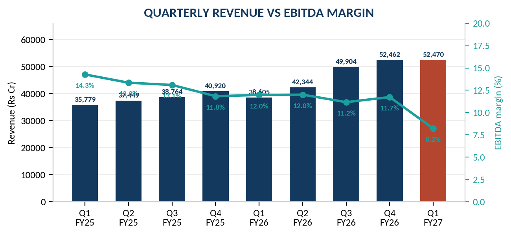
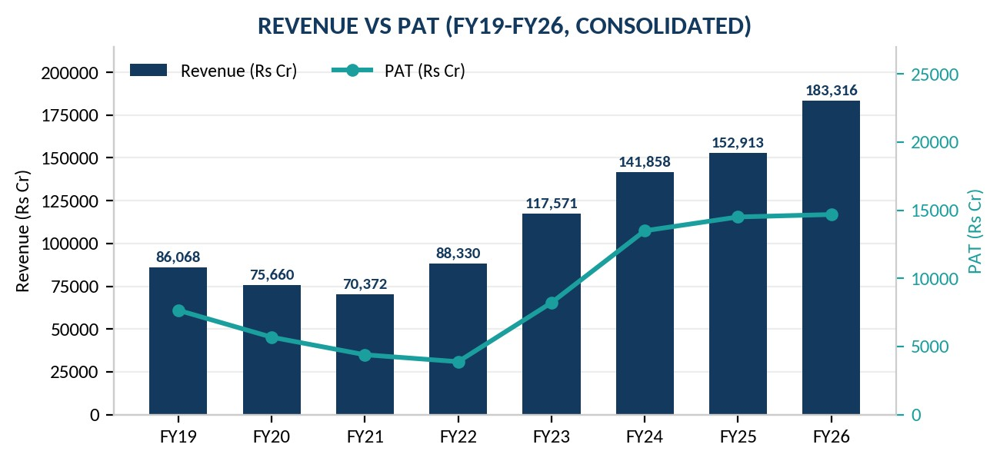
The revenue trajectory divides cleanly into three phases. From FY19 to FY21 the business contracted, from Rs 86,068 crore to Rs 70,372 crore, as the BS-VI emission transition, a broad slowdown in Indian consumption and then the pandemic compounded one another. From FY22 to FY24 it recovered sharply, more than doubling to Rs 1,41,858 crore, driven by the SUV portfolio build-out, price and mix improvement, and pent-up demand. FY25 was a pause at 7.8% growth. FY26 reaccelerated to 19.9% on the GST reform and record exports.
The FY26 growth decomposes roughly as follows. Total volumes grew 8.4%, from 22,34,266 to 24,22,713 units. Revenue grew 19.9%. The residual — approximately eleven percentage points — came from average selling price: a richer utility-vehicle mix, the Victoris and e VITARA launches at higher price points, and two rounds of price increases. Management confirmed on the Q4 call that it sees further headroom for average selling price improvement from upper-segment models and from a rising electric vehicle contribution.
This is a healthier growth composition than it first appears. Growth driven by mix and price is generally higher quality than growth driven by discounting, and Maruti Suzuki's twelve-day dealer inventory confirms that volumes were not bought with channel incentives. The difficulty is that the price increases have been cost-recovery rather than margin-expansion: the Company raised prices by up to Rs 30,000 in June 2026 and again by a similar amount in August 2026, citing lasting input-cost pressure. Two increases in three months is not pricing power being exercised; it is pricing power being consumed.
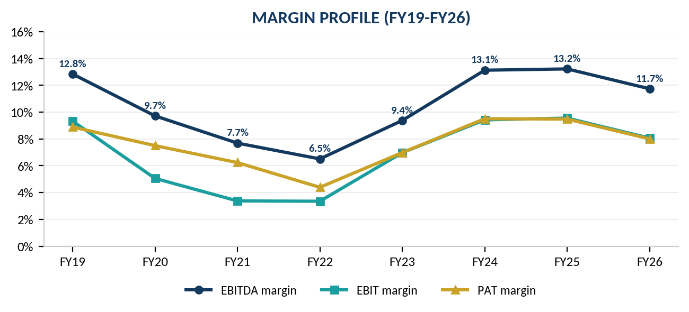
The margin history establishes that Maruti Suzuki's structural profitability band is roughly 12–13% at the EBITDA level and 9–10% at the EBIT level, achieved in FY19 and again in FY24 and FY25. FY20 to FY22 was a genuine trough, with EBIT margin falling to 3.35%, driven by the emission-norm transition and volume collapse. FY26's 11.75% EBITDA and 8.07% EBIT margins therefore sit below the structural band but well above crisis levels.
| Cost line | FY25 | FY26 | Change | Comment |
|---|---|---|---|---|
| Revenue from operations | 1,52,913 | 1,83,316 | +19.9% | Volume +8.4%, price and mix +11.5% |
| Cost of materials consumed | — | — | +27.9% | The dominant driver; grew 8pp faster than revenue |
| Employee benefits expense | 7,026 | 9,050 | +28.8% | Staffing ahead of the Kharkhoda ramp |
| Depreciation & amortisation | 5,608 | 6,742 | +20.2% | Capital expenditure cycle hitting the P&L |
| Other income | 5,199 | 4,569 | (13.2%) | Treasury cushion removed |
| EBITDA margin | 13.23% | 11.75% | (148 bps) | Broad-based, not a single line item |
| PAT margin | 9.48% | 8.01% | (147 bps) | Profit up 1.2% on revenue up 19.9% |
Source: Company Q4 FY26 results; cost-line growth rates per ChartAlert analysis of the filed statements. Employee and depreciation figures converted from the reported Rs million.
The important conclusion from this table is that no single explanation carries the compression. Raw material inflation alone would be cyclical and self-correcting. Staffing and depreciation ahead of a capacity ramp would be temporary and reversible through operating leverage. The fall in other income would be a non-operating matter. All three occurred together, which is why the reported outcome — a 148 basis point EBITDA decline in a record volume year — is worse than any individual driver would suggest.
It also frames the recovery path. Material costs should moderate as commodity comparatives ease and as the two rounds of price increases annualise. Employee cost growth should decelerate once the new lines are staffed. Depreciation will not fall; it will keep rising through the capital expenditure cycle. So margin recovery to the FY25 level of 9.56% EBIT requires the first two to reverse decisively enough to absorb the third. Our base case assumes partial recovery to 9.00% by FY28E, and this is deliberately below the level several sell-side houses assume.
| Rs Crore | Mar-22 | Mar-23 | Mar-24 | Mar-25 | Mar-26 |
|---|---|---|---|---|---|
| Equity share capital | 151 | 151 | 157 | 157 | 157 |
| Reserves and surplus | 55,182 | 61,640 | 85,479 | 96,083 | 1,06,999 |
| Net worth | 55,333 | 61,791 | 85,636 | 96,240 | 1,07,156 |
| Borrowings | 426 | 1,247 | 119 | 87 | 102 |
| Other liabilities | 18,896 | 21,558 | 29,550 | 34,689 | 41,622 |
| Total liabilities and equity | 74,656 | 84,597 | 1,15,304 | 1,31,016 | 1,48,880 |
| Net fixed assets | 13,747 | 17,830 | 27,865 | 32,983 | 34,523 |
| Capital work in progress | 2,936 | 2,904 | 7,735 | 7,929 | 9,838 |
| Investments | 42,035 | 49,184 | 57,296 | 66,265 | 76,838 |
| Other assets | 15,937 | 14,678 | 22,408 | 23,839 | 27,680 |
| Total assets | 74,656 | 84,597 | 1,15,304 | 1,31,016 | 1,48,880 |
Source: Consolidated balance sheet as compiled by Screener.in. Net worth is the author's computation as equity capital plus reserves.
This is among the most conservative balance sheets in Indian large-cap manufacturing. Borrowings of Rs 102 crore against a net worth of Rs 1,07,156 crore give a debt-to-equity ratio of essentially zero. Total equity funds roughly 72% of the balance sheet. The step-up in net worth between March 2023 and March 2024, from Rs 61,791 crore to Rs 85,636 crore, reflects the share issuance associated with the Suzuki Motor Gujarat transaction rather than retained earnings alone, and this matters when interpreting the FY24 and FY25 return-on-equity figures.
| Ratio (days) | FY22 | FY23 | FY24 | FY25 | FY26 |
|---|---|---|---|---|---|
| Debtor days | 8 | 10 | 12 | 16 | 11 |
| Inventory days | 20 | 18 | 19 | 23 | 31 |
| Days payable | 54 | 50 | 62 | 57 | 61 |
| Cash conversion cycle | (26) | (22) | (31) | (18) | (19) |
| Working capital days | (30) | (26) | (26) | (24) | (29) |
Source: Screener.in ratio computations from the consolidated financial statements.
Maruti Suzuki operates on a negative cash conversion cycle of roughly nineteen days. It collects from dealers in eleven days and pays suppliers in sixty-one. In practical terms the Company's suppliers finance its working capital, and growth releases cash rather than consuming it. For a manufacturer this is unusual and valuable: it means the incremental capital required to grow is almost entirely fixed-asset capital, with no working-capital drag alongside. This is why the discounted cash flow model in this report treats the change in working capital as a source of cash rather than a use.
One line does warrant monitoring. Inventory days rose from 23 in FY25 to 31 in FY26, the highest in the period shown. Management characterised this as deliberate build ahead of demand rather than a channel problem, and the twelve-day dealer inventory figure supports that reading — the stock is sitting with the Company, not stranded in the network. But an eight-day increase in inventory on a revenue base of Rs 1,83,316 crore is roughly Rs 4,000 crore of cash, and a repeat in FY27 would need a different explanation.
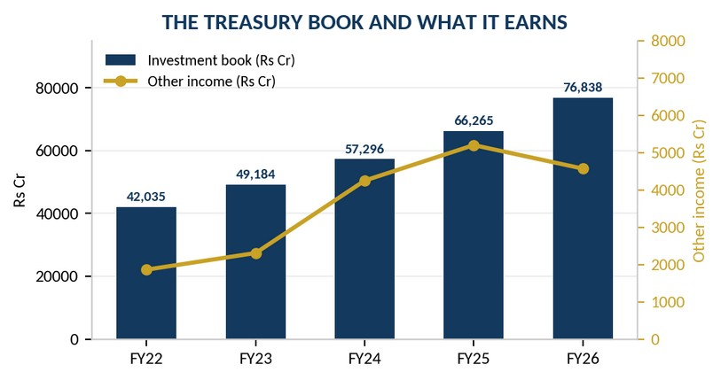
Maruti Suzuki holds Rs 76,838 crore of investments — roughly 52% of total assets and equivalent to about 18% of its market capitalisation. Approximately Rs 15,424 crore sits in liquid current investments; the balance is longer-dated. This portfolio generated other income of Rs 4,569 crore in FY26.
To place that in proportion: EBIT from the automobile business was Rs 14,788 crore. Other income was Rs 4,569 crore, or 24% of profit before tax. Roughly a quarter of what Maruti Suzuki reports as profit is investment income, not car-making income — and that share has been rising.
| Rs Crore | FY23 | FY24 | FY25 | FY26 |
|---|---|---|---|---|
| EBIT (operating) | 8,203 | 13,370 | 14,616 | 14,788 |
| Average capital employed | 59,399 | 74,397 | 91,041 | 1,01,793 |
| Reported ROCE, incl. other income (%) | 17.7% | 23.7% | 21.8% | 19.0% |
| Post-tax operating ROCE (%) | 11.1% | 13.8% | 11.9% | 11.2% |
| Less: average investment book | 45,610 | 53,240 | 61,781 | 71,552 |
| Core capital employed | 13,789 | 21,157 | 29,260 | 30,241 |
| Core pre-tax return on operating capital (%) | 59.5% | 63.2% | 50.0% | 48.9% |
Source: Author's computation from consolidated balance sheet and profit and loss data. Reported ROCE follows the Screener.in convention of (profit before tax + finance cost) / average capital employed. Core capital employed deducts the full investment book, which also contains investments in subsidiaries and associates, so the core return figure should be read as indicative of direction rather than as a precise measure.
This cuts both ways for valuation. Positively, it means the operating business deserves a higher multiple than headline return ratios imply, and it justifies treating the investment book as a separate non-operating asset in the valuation bridge — which this report does. Negatively, it means a rising share of reported earnings per share is treasury income earning perhaps 7%, and investment income should not be capitalised at the same multiple as manufacturing profit. Applying a single price-to-earnings multiple to blended earnings, as most published research does, systematically overstates the value of the operating business or understates the drag from the treasury book, depending on which way one runs the argument.
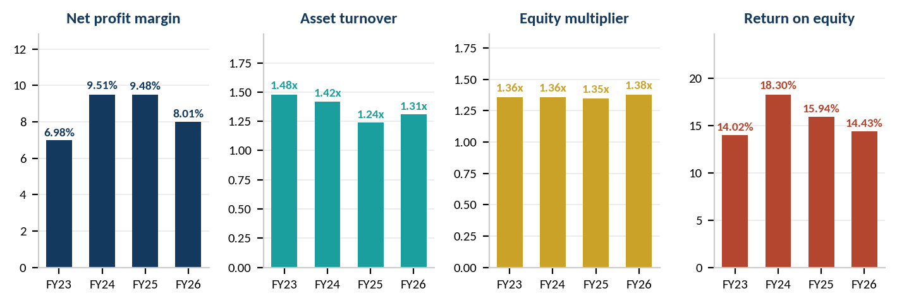
| Return on equity decomposition | FY23 | FY24 | FY25 | FY26 |
|---|---|---|---|---|
| Profit after tax (Rs Cr) | 8,211 | 13,488 | 14,500 | 14,680 |
| Revenue (Rs Cr) | 1,17,571 | 1,41,858 | 1,52,913 | 1,83,316 |
| (A) Net profit margin | 6.98% | 9.51% | 9.48% | 8.01% |
| Average total assets (Rs Cr) | 79,627 | 99,951 | 1,23,160 | 1,39,948 |
| (B) Asset turnover | 1.48x | 1.42x | 1.24x | 1.31x |
| Average shareholders' equity (Rs Cr) | 58,562 | 73,714 | 90,938 | 1,01,698 |
| (C) Equity multiplier | 1.36x | 1.36x | 1.35x | 1.38x |
| Return on equity (A x B x C) | 14.02% | 18.30% | 15.94% | 14.43% |
| Return on assets (A x B) | 10.31% | 13.49% | 11.77% | 10.49% |
Source: Author's computation from consolidated financial statements. Averages are simple two-point averages of opening and closing balances.
Return on equity peaked at 18.30% in FY24 and has declined in each subsequent year to 14.43% in FY26. The decomposition shows that this is a margin story and not a leverage or efficiency story. The equity multiplier has been essentially static at 1.35x to 1.38x throughout — the Company has not levered up, and has no intention of doing so. Asset turnover fell from 1.48x to 1.24x between FY23 and FY25 as the capital expenditure programme added assets ahead of the revenue they support, then recovered to 1.31x in FY26 as those assets began producing. The entire deterioration in FY26 sits in the net profit margin, which fell 147 basis points.
There is a constructive reading here. If asset turnover continues recovering as new capacity fills — the FY23 level of 1.48x is a reasonable eventual target — and the net profit margin recovers even partially toward 9%, return on equity would return above 16% without any change in capital structure. That is the bull case in a single sentence, and it is why we forecast return on equity improving to 15.4% by FY28E rather than continuing to decline.
| Rs Crore | FY22 | FY23 | FY24 | FY25 | FY26 |
|---|---|---|---|---|---|
| Cash from operating activities | 1,840 | 9,251 | 16,801 | 16,180 | 19,100 |
| Cash from investing activities | (239) | (8,036) | (11,865) | (14,500) | (14,734) |
| Cash from financing activities | (1,607) | (1,213) | (4,062) | (4,155) | (4,484) |
| Free cash flow | (1,483) | 3,004 | 7,646 | 5,601 | 8,754 |
| Capital expenditure (implied) | 3,323 | 6,247 | 9,155 | 10,579 | 10,346 |
| Operating cash flow / EBITDA (%) | 32% | 84% | 90% | 80% | 89% |
Source: Consolidated cash flow statement via Screener.in. Capital expenditure is implied as operating cash flow less free cash flow; the FY26 implied figure of Rs 10,346 crore reconciles closely with the Rs 10,398 crore the Company disclosed.
Cash generation is the strongest counter-argument to the earnings-quality concern raised earlier in this report. Operating cash flow rose 18.0% in FY26 to Rs 19,100 crore even as reported profit rose only 1.2%. Cash conversion — operating cash flow as a proportion of EBITDA — was 89%, in line with the FY24 level. Free cash flow of Rs 8,754 crore was the highest in the period shown, despite capital expenditure of over Rs 10,000 crore.
This tells us the FY26 profit compression was substantially non-cash in character. Depreciation, which accounted for a meaningful part of the decline, does not consume cash. The Company continues to convert its EBITDA into cash at a high rate and to fund its entire capital expenditure programme, its Rs 4,402 crore dividend and its growing investment book from internal accruals, with no recourse to external financing. Financing outflows of Rs 4,484 crore in FY26 are essentially dividends alone.
The financing line also merits a governance observation. Maruti Suzuki paid a record dividend of Rs 140 per share for FY26, aggregating Rs 4,402 crore against a payout ratio of roughly 30%. The Company retains around Rs 10,000 crore of earnings annually while already holding Rs 76,838 crore in investments and requiring only Rs 14,000 crore of capital expenditure. A reasonable minority shareholder might ask why the payout ratio is not higher, or why the Company does not consider a buyback. The counter-argument — that the capacity ambition to 4 million units by 2031 will consume this capital — is legitimate, but the treasury book has grown every single year regardless.
| Input | Value | Basis |
|---|---|---|
| Risk-free rate (10-year GOI benchmark yield) | 6.90% | Author's estimate, mid-2026 |
| Expected market return | 12.50% | Long-run Nifty 50 total return assumption |
| Equity risk premium (Rm − Rf) | 5.60% | Consistent with published India ERP estimates |
| Beta vs Nifty 50 | 0.75 | Low-beta defensive; published estimates cluster 0.6–0.9 |
| Cost of equity [Rf + Beta x ERP] | 11.10% | 6.90% + 0.75 x 5.60% |
| Input | Value | Basis |
|---|---|---|
| Long-term credit rating | CRISIL AAA | CRISIL rating action, November 2025 |
| AAA corporate spread over sovereign | 0.30% | Prevailing AAA spreads |
| Pre-tax cost of debt | 7.20% | Rf + spread |
| Marginal tax rate | 25.17% | Statutory rate under section 115BAA |
| Post-tax cost of debt [Kd x (1 − t)] | 5.39% | 7.20% x (1 − 0.2517) |
| Input | Value | Basis |
|---|---|---|
| Market capitalisation (Rs Cr) | 4,34,945 | Rs 13,834 x 31.44 Cr shares, 14 Aug 2026 |
| Total borrowings (Rs Cr) | 102 | Consolidated balance sheet, March 2026 |
| Equity weight | 99.98% | E / (D + E) |
| Debt weight | 0.02% | D / (D + E) |
| WACC [Ke x We + Kd(1 − t) x Wd] | 11.10% | Rounded; debt weight is immaterial |
We value the operating business on a free cash flow to firm basis over an explicit five-year horizon to FY31E, with a Gordon growth terminal value, and then bridge to equity value by adding the treasury investment book as a non-operating asset. This structure is deliberate: because roughly a quarter of Maruti Suzuki's reported profit is investment income, including other income in the operating cash flows would double-count the treasury book once in the cash flows and again in the bridge.
| Assumption | FY27E | FY28E | FY29E | FY30E | FY31E | Terminal | Rationale |
|---|---|---|---|---|---|---|---|
| Revenue growth | 14.0% | 12.0% | 11.0% | 10.0% | 9.0% | 5.5% | Management guides >10% domestic volume growth in FY27; we add price/mix, then fade toward nominal GDP |
| EBIT margin | 8.30% | 9.00% | 9.50% | 9.80% | 10.00% | 10.00% | Partial recovery only; terminal below the 9.56% of FY25 on an EBIT basis is deliberate conservatism |
| Effective tax rate | 25.17% | 25.17% | 25.17% | 25.17% | 25.17% | 25.17% | Statutory concessional rate |
| D&A as % of revenue | 3.70% | 3.70% | 3.70% | 3.70% | 3.70% | 3.70% | In line with FY26 actual of 3.68% |
| Capital expenditure | Rs 14,000 Cr | 6.5% | 6.0% | 5.5% | 5.0% | 5.0% | FY27 as guided; thereafter tapering as a percentage of revenue as the 4mn-unit build-out completes |
| Change in working capital | (2.5%) | (2.5%) | (2.5%) | (2.5%) | (2.5%) | (2.5%) | Of incremental revenue; negative cycle means growth releases cash |
| Rs Crore | FY27E | FY28E | FY29E | FY30E | FY31E | Terminal |
|---|---|---|---|---|---|---|
| Revenue from operations | 2,08,980 | 2,34,058 | 2,59,804 | 2,85,785 | 3,11,505 | 3,28,638 |
| EBIT margin (%) | 8.30% | 9.00% | 9.50% | 9.80% | 10.00% | 10.00% |
| EBIT | 17,345 | 21,065 | 24,681 | 28,007 | 31,151 | 32,864 |
| Less: tax at 25.17% | (4,365) | (5,302) | (6,212) | (7,049) | (7,841) | (8,272) |
| NOPAT | 12,980 | 15,763 | 18,469 | 20,958 | 23,310 | 24,592 |
| Add: depreciation and amortisation | 7,732 | 8,660 | 9,613 | 10,574 | 11,526 | 12,160 |
| Less: capital expenditure | (14,000) | (15,214) | (15,588) | (15,718) | (15,575) | (16,432) |
| Less: change in working capital | 642 | 627 | 644 | 650 | 643 | 428 |
| Free cash flow to firm | 7,353 | 9,836 | 13,137 | 16,463 | 19,903 | 20,748 |
| Discount factor at 11.10% | 0.9001 | 0.8102 | 0.7292 | 0.6564 | 0.5908 | — |
| Present value of FCFF | 6,619 | 7,969 | 9,580 | 10,806 | 11,759 | — |
| Terminal FCFF (FY32) | 20,748 |
| Terminal growth rate | 5.50% |
| Terminal value [FCFF / (WACC − g)] | 3,70,500 |
| Present value of terminal value | 2,18,886 |
| Present value of explicit FCFF (FY27–FY31) | 46,732 |
| Enterprise value | 2,65,618 |
| Add: investments and cash (post-haircut) | 70,000 |
| Less: borrowings | (102) |
| Equity value | 3,35,516 |
| Shares outstanding (Cr) | 31.44 |
| Intrinsic value per share (Rs) | 10,672 |
| Current market price (Rs) | 13,834 |
| Implied downside | (22.9%) |
The consolidated balance sheet shows Rs 76,838 crore of investments plus cash. We carry Rs 70,000 crore into the bridge — a haircut of roughly 9%.
Two reasons. First, the investment line includes stakes in subsidiaries and associates carried at cost, whose operating results are already inside the consolidated cash flows we have valued; counting them again would double-count. Second, unrealised gains within the portfolio carry a deferred tax liability, which was Rs 1,800 crore at March 2026 and rising.
Readers who prefer to carry the full Rs 76,838 crore should add roughly Rs 217 to the intrinsic value per share.
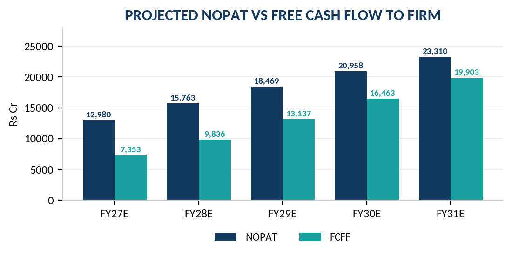
A discounted cash flow output is only as robust as its two most fragile inputs. For Maruti Suzuki those are the discount rate and the terminal margin — the growth rate matters less than either, because the business is mature and the terminal value assumption is already conservative. Both grids below show intrinsic value per share in rupees, against a current market price of Rs 13,834.
| WACC \ g | 4.50% | 5.00% | 5.50% | 6.00% | 6.50% |
|---|---|---|---|---|---|
| 10.10% | 10,944 | 11,700 | 12,622 | 13,768 | 15,233 |
| 10.60% | 10,184 | 10,806 | 11,551 | 12,457 | 13,585 |
| 11.10% | 9,540 | 10,059 | 10,672 | 11,404 | 12,296 |
| 11.60% | 8,987 | 9,426 | 9,937 | 10,540 | 11,260 |
| 12.10% | 8,508 | 8,883 | 9,315 | 9,818 | 10,410 |
| WACC \ terminal EBIT margin | 8.50% | 9.25% | 10.00% | 10.75% | 11.50% |
|---|---|---|---|---|---|
| 10.10% | 10,838 | 11,730 | 12,622 | 13,514 | 14,406 |
| 10.60% | 9,957 | 10,754 | 11,551 | 12,348 | 13,145 |
| 11.10% | 9,233 | 9,953 | 10,672 | 11,391 | 12,110 |
| 11.60% | 8,629 | 9,283 | 9,937 | 10,591 | 11,246 |
| 12.10% | 8,117 | 8,716 | 9,315 | 9,914 | 10,513 |
Source: Author's model. Shaded row is the base case. In Grid B the explicit-period margin path is scaled proportionately with the terminal margin.
The grids make two things clear. First, the discounted cash flow does not reach the current market price under any combination we regard as defensible. The highest cell in either grid is Rs 15,233, and reaching it requires simultaneously assuming a 10.10% discount rate and 6.50% perpetual growth — a real growth rate close to India's expected long-run GDP growth, sustained forever, for a company steadily losing market share. Second, the model is far more sensitive to the discount rate than to either growth or margin: moving the WACC by 200 basis points swings the value by roughly Rs 3,300 per share, while a 300 basis point swing in terminal margin moves it by Rs 2,900.
A discounted cash flow that sits 23% below the market price is a finding, not a conclusion. Indian large-cap consumer-facing manufacturers have persistently traded above their intrinsic value on a strict free-cash-flow basis, because the market capitalises the durability of the franchise, the optionality of the capacity build-out and the strategic value of scale in ways a five-year cash flow forecast does not. The market has been right about this for long enough that dismissing it would be arrogant. We therefore weight relative valuation more heavily than the discounted cash flow in setting our target.
| Company | Market cap (Rs Cr) | FY26 revenue (Rs Cr) | FY26 PAT (Rs Cr) | P/E (x) | ROE (%) | FY26 PV volume | PV share |
|---|---|---|---|---|---|---|---|
| Maruti Suzuki | 4,34,945 | 1,83,316 | 14,680 | 30.3 | 14.3 | 18,23,130 | 38.93% |
| Mahindra & Mahindra | ~4,37,000 | 1,98,639 | n.m. | n.m. | 23.4 | 6,60,276 | 14.10% |
| Tata Motors PV | 1,23,193 | 3,43,703 | n.m. | n.m. | n.m. | 6,31,387 | 13.48% |
| Hyundai Motor India | 1,63,987 | 68,831 | 4,870 | 33.7 | 36.8 | 5,84,906 | 12.49% |
Source: Screener.in and industry volume compilations, August 2026. Caveats: Mahindra's revenue and returns include a large financial services business and its tractor franchise, so it is not a like-for-like passenger vehicle comparator. Tata Motors PV consolidated figures include Jaguar Land Rover and its FY26 reported earnings contain material exceptional items arising from the group demerger, which makes its price-to-earnings ratio meaningless — marked n.m. Hyundai's return on equity is a three-year figure and is flattered by a small equity base following its 2024 listing.
The honest conclusion from this peer table is that clean comparability does not exist. Maruti Suzuki is the only large listed pure-play Indian passenger vehicle manufacturer with an uncomplicated financial structure. Hyundai Motor India is the nearest analogue and trades at a higher multiple on a far smaller and more concentrated business. Mahindra trades at a comparable market capitalisation on a business growing volumes three times faster but with substantial non-automotive earnings. The comparison that actually informs the valuation is therefore Maruti Suzuki against its own history, and against the multiple the market has been willing to pay for it through cycles.
| Basis | FY27E | FY28E |
|---|---|---|
| EBIT (Rs Cr) | 17,345 | 21,065 |
| Add: other income (Rs Cr) | 5,200 | 5,000 |
| Less: finance cost (Rs Cr) | (250) | (250) |
| Profit before tax (Rs Cr) | 22,295 | 25,815 |
| Profit after tax at 25.17% (Rs Cr) | 16,684 | 19,318 |
| Earnings per share (Rs) | 530.7 | 614.4 |
| Implied price at 20x (Rs) | 10,613 | 12,288 |
| Implied price at 22x (Rs) | 11,674 | 13,517 |
| Implied price at 25x (Rs) | 13,266 | 15,361 |
| Implied price at 27x (Rs) | 14,328 | 16,589 |
At 25 times FY28 estimated earnings — the multiple Motilal Oswal applies, and close to the sector average of roughly 25 times — the implied value is Rs 15,361. At 22 times, closer to where the stock has traded in less favourable periods, it is Rs 13,517, essentially the current price. The stock is therefore discounting somewhere between 22 and 23 times FY28 earnings today, which is neither demanding nor cheap for a franchise of this quality with this margin trajectory.
| Scenario | FY28E EBIT margin | FY28E EPS (Rs) | Exit multiple | Implied value (Rs) | vs CMP | What has to happen |
|---|---|---|---|---|---|---|
| Bear | 8.00% | 559 | 20x | 11,174 | (19.2%) | Cost inflation persists, capacity ramp is slow, share loss to Mahindra and Tata continues, GST demand pull-forward reverses in FY27 |
| Base | 9.00% | 614 | 25x | 15,361 | +11.0% | Partial margin recovery as capacity fills and price increases annualise; volume growth in line with management's >10% guidance |
| Bull | 10.00% | 670 | 27x | 18,094 | +30.8% | Full margin recovery to historical band, exports scale beyond 5 lakh units, e VITARA gains traction, SUV share stabilises |
| Method | Value per share (Rs) | Weight | Contribution (Rs) |
|---|---|---|---|
| Discounted cash flow (FCFF) | 10,672 | 30% | 3,202 |
| 25x FY28E earnings per share | 15,361 | 70% | 10,752 |
| Blended 12-month target price | 100% | 13,950 |
Weightings reflect the analyst's judgement that a five-year FCFF model understates the value of a mature franchise with a large capacity option, while an earnings multiple alone ignores the capital intensity of the current investment cycle. Target price rounded.
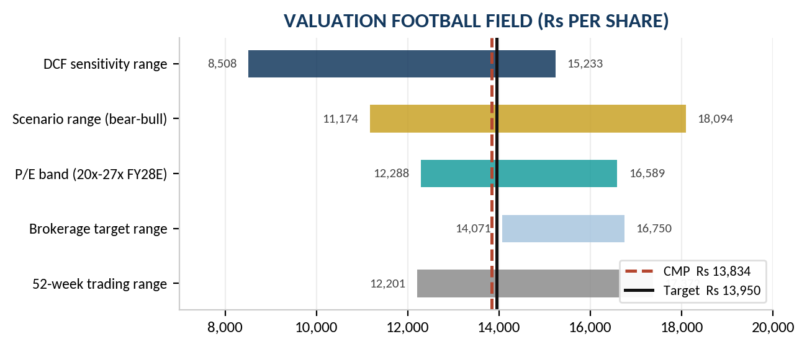
| Risk | Assessment | Potential impact on our valuation |
|---|---|---|
| Margin recovery fails to materialise | High likelihood, high impact. Q1 FY27 EBITDA margin of 8.2% is below our FY27E assumption of roughly 12% at the EBITDA level. Two quarters at this level would invalidate the base case. | A terminal EBIT margin of 8.50% instead of 10.00% reduces the discounted cash flow value from Rs 10,672 to Rs 9,233, and the bear scenario target to Rs 11,174. |
| FY27 volume guidance disappoints | Moderate likelihood, high impact. Management guides to over 10% domestic growth against industry expectations of 3–6%. The GST base effect makes the comparison unusually demanding. | Each percentage point of revenue growth foregone in FY27E reduces the target by roughly Rs 120 per share through the compounding of the forecast base. |
| Continued market share erosion | High likelihood, moderate impact near term. Six consecutive years of decline with faster-growing competitors and a full SUV launch pipeline at Mahindra and Tata. | Primarily a multiple risk rather than an earnings risk. A de-rating from 25x to 22x FY28E earnings removes roughly Rs 1,300 from the target. |
| Commodity and currency cost shock | Moderate likelihood, moderate impact. Cost of materials grew 27.9% in FY26; residual yen exposure through royalties and imported components. | A 100 basis point permanent hit to EBIT margin reduces the discounted cash flow value by approximately Rs 960 per share. |
| Capital allocation — treasury accumulation | High likelihood, low but persistent impact. The investment book has grown every year and now exceeds Rs 76,000 crore with no stated framework. | Not a valuation risk in itself, but each year of accumulation at treasury yields rather than operating returns dilutes blended return on equity by roughly 30–50 basis points. |
| Regulatory change — labour codes, emissions | Moderate likelihood, uncertain impact. Explicitly flagged by management as potentially affecting future financials. | Not quantified in our model. Precedent from peers suggests a one-time charge rather than a permanent margin effect. |
The table below sets out publicly reported brokerage views on Maruti Suzuki following the FY26 results and the Q1 FY27 print. The dispersion is instructive: targets range from Rs 14,071 to Rs 16,750, a spread of 19%, and the ratings split between Buy and Neutral. That spread is unusually wide for a Nifty 50 constituent covered by every major house, and it reflects genuine disagreement about exactly the question this report has focused on — whether the FY26 margin compression is cyclical or structural.
| Research house | Rating | Target (Rs) | vs CMP | Stated basis |
|---|---|---|---|---|
| ICICI Securities | Buy | 16,750 | +21.1% | Revenue CAGR of 17%, EBITDA CAGR of 10% and EPS CAGR of 20% over FY26–FY28E; seven new SUVs planned by FY30 |
| Motilal Oswal | Buy | 15,529 | +12.2% | 25x FY28E EPS; 16% earnings CAGR FY26–FY28; cites the 1,90,000-unit order backlog and GST-driven small-car affordability |
| Nomura | Neutral | 14,071 | +1.7% | Raised FY27 volume estimate 12.5% to 2.72 million but lowered EBITDA margins on cost pressure; calls ~27x FY28F core EPS fair and prefers M&M and Hyundai |
| Consensus (reported average) | — | ~15,450 | +11.7% | Range of published targets clusters between Rs 14,000 and Rs 17,255 |
| This report | Hold | 13,950 | +0.8% | 30% weight to FCFF DCF (Rs 10,672) and 70% to 25x FY28E EPS (Rs 15,361), with a below-consensus margin recovery path |
Source: Publicly reported brokerage commentary compiled from Business Standard, Whalesbook and TopNews coverage between April and August 2026. Figures as reported and not independently verified against the underlying research notes; targets are stated as at the date of publication and may since have been revised.
Our target sits below every published figure we have identified. The difference is not a disagreement about the business — we accept the order backlog, the capacity ramp, the export momentum and the strength of the franchise. It is a disagreement about the margin path. Motilal Oswal's Rs 15,529 rests on 25 times FY28 earnings per share, implying an estimate close to Rs 621; our own FY28E figure of Rs 614 is barely different. The gap arises almost entirely because we blend in a discounted cash flow that a purely multiple-based approach excludes, and because we weight the Q1 FY27 margin outcome more heavily as evidence rather than treating it as noise.
Nomura's position is the closest to ours and reached by a different route: raising volume estimates while cutting margin assumptions, and concluding that the valuation is fair rather than attractive. When the most bearish house on the street arrives at fair value through the same mechanism we have identified, that is corroboration rather than contrarianism.
Maruti Suzuki is a high-quality business at a full price, in the middle of a transition it has not yet proved it can complete profitably. We would own it. We would not add at these levels.
This report has been prepared solely for academic and educational purposes and is not intended to be used as investment advice. The analysis, views, estimates and opinions expressed are based on publicly available information believed to be reliable but not independently verified, and are provided for illustration only.
This report does not constitute an offer, solicitation, or recommendation to buy, sell or hold any securities of Maruti Suzuki India Limited or of any other company mentioned. The 'HOLD' rating and target price are analytical outputs of a stated methodology and should not be acted upon as personalised financial advice. Share prices can fall as well as rise, and past performance is not a guide to future returns.
The author is not a registered investment adviser or research analyst under the SEBI (Research Analysts) Regulations, 2014, and shall not be held responsible for any decision made on the basis of the content of this document. Forward-looking estimates are inherently uncertain and depend on assumptions that may prove incorrect. Readers must conduct their own independent research and consult a qualified, registered financial adviser before making any investment decision.
| Coverage | Maruti Suzuki India Limited (NSE: MARUTI · BSE: 532500 · ISIN: INE585B01010) |
| Sector | Consumer Discretionary — Automobiles — Passenger Cars & Utility Vehicles |
| Basis of preparation | Consolidated financial statements, FY19–FY26 actual and FY27E–FY31E estimated |
| Valuation methodology | Free cash flow to firm discounted at 11.10% WACC, blended 30:70 with a 25x FY28E earnings multiple |
| Recommendation | HOLD · 12-month target price Rs 13,950 · CMP Rs 13,834 as at 14 August 2026 |
| Report date | 15 August 2026 |